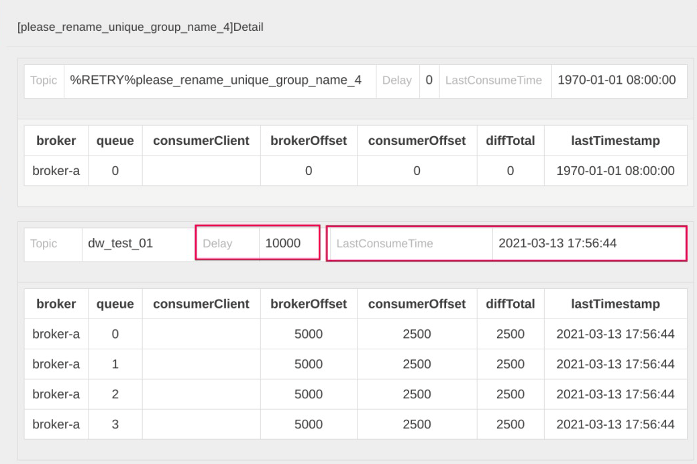
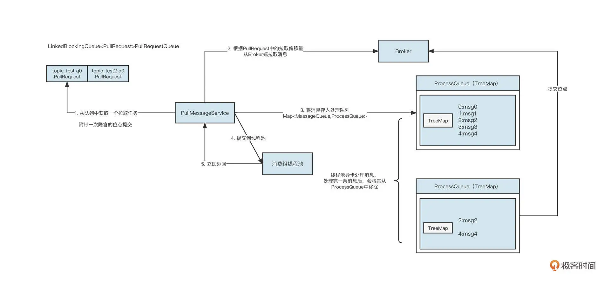
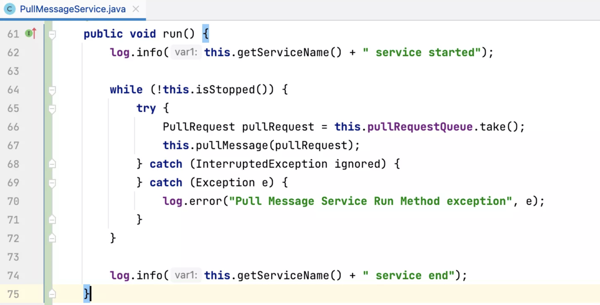
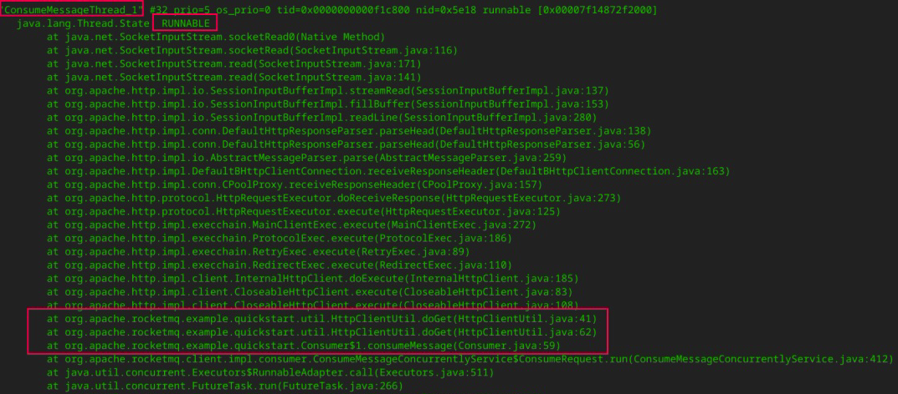

- 00 开篇词 为什么中间件对分布式架构体系来说这么重要？.md.html
- 01 中间件生态（上）：有哪些类型的中间件？.md.html
- 02 中间件生态（下）：同类型的中间件如何进行选型？.md.html
- 03 数组与链表：存储设计的基石有哪些？.md.html
- 04 红黑树：图解红黑树的构造过程与应用场景.md.html
- 05 多线程：多线程编程有哪些常见的设计模式？.md.html
- 06 锁：如何理解锁的同步阻塞队列与条件队列？.md.html
- 07 NIO：手撸一个简易的主从多Reactor线程模型.md.html
- 08 Netty：如何优雅地处理网络读写，制定网络通信协议？.md.html
- 08 加餐 中间件底层的通用设计理念.md.html
- 09 技术选型：如何选择微服务框架和注册中心？.md.html
- 10 设计原理：Dubbo核心设计原理剖析.md.html
- 11 案例：如何基于Dubbo进行网关设计？.md.html
- 12 案例：如何实现蓝绿发布？.md.html
- 13 技术选型：如何根据应用场景选择合适的消息中间件？.md.html
- 14 性能之道：RocketMQ与Kafka高性能设计对比.md.html
- 15 案例：消息中间件如何实现蓝绿？.md.html
- 16 案例：如何提升RocketMQ顺序消费性能？.md.html
- 17 运维：如何运维日均亿级的消息集群？.md.html
- 18 案例：如何排查RocketMQ消息发送超时故障？.md.html
- 19 案例：如何排查RocketMQ消息消费积压问题？.md.html
- 20 技术选型：分布式定时调度框架的功能和未来.md.html
- 21 设计理念：如何基于ZooKeeper设计准实时架构？.md.html
- 22 案例：使用分布式调度框架该考虑哪些问题？.md.html
- 23 案例：如何在生产环境进行全链路压测？.md.html
- 大咖助阵 高楼：我们应该如何学习中间件？.md.html
- 用户故事 学而时习之，不亦乐乎.md.html
- 用户故事 愿做技术的追梦人.md.html
- 用户故事 浪费时间也是为了珍惜时间.md.html
- 结束语 坚持不懈，越努力越幸运.md.html
- 捐赠
19 案例：如何排查RocketMQ消息消费积压问题？
你好，我是丁威。
我想，几乎每一位使用过消息中间件的小伙伴，都会在消息消费时遇到消费积压的问题。在处理这类问题时，大部分同学都会选择横向扩容。但不幸的是，这种解决办法治标不治本，到最后问题还是得不到解决。
说到底，消费端出现消息消费积压是一个结果，但引起这个结果的原因是什么呢？在没有弄清楚原因之前谈优化和解决方案都显得很苍白。
这节课，我们就进一步认识一下消费积压和 RocketMQ 的消息消费模型，看看怎么从根本上排查消费积压的问题。
RocketMQ 的消息消费模型
在 RocketMQ 消费领域中，判断消费端遇到的瓶颈通常会用到两个重要的指标：Delay 和 LastConsumeTime。
在开源版本的控制台 rocketmq-console 界面中，我们可以查阅消费端的这两个指标：

Delay 指的是消息积压数量，它是由 BrokerOffset（服务端当前最大的逻辑偏移量）减去 ConsumerOffset（消费者消费的当前位点）计算出来的。如果 Delay 值很大，说明消费端遇到了瓶颈。
LastConsumeTime 表示上一次成功消费消息的存储时间。这个值如果很大，同样能说明消费端遇到了瓶颈。如果这个值线上为 1970 年，表示消费者当前消费位点对应的消息在服务端已经过期，被删除了。
那为什么消费会积压呢？要理解这个问题，我们首先要了解 RocketMQ 消费者的消费处理模型。核心流程如下图所示：

说明一下具体的工作流程。
PullMessageService 线程从拉取任务队列中获取一个待拉取任务 PullRquest。
PullMessageService 线程根据 PullRequest 中的主题名称、队列编号、拉取位点向 Broker 服务器拉取一批消息。拉取到消息后，服务端会更新 PullRequest 中下一次拉取任务的偏移量，将其放到队列的尾部。
PullMessageService 线程将拉取到的消息存入到处理队列（ProcessQueue），每一个 MessageQueue（Broker 名称 + 主题名称 + 队列编号）对应一个处理队列。
PullMessageService 线程将拉取到的消息提交到线程池。
PullMessageService 线程将消息提交到线程池后，不会等这批消息处理完成，而是立即返回。然后 PullMessageService 线程重复步骤一到步骤五。
当消息提交到消费线程池后，进行异步消费。消息消费成功后，会将消息从处理队列（ProcessQueue）中移除，然后获取处理队列中的最小偏移量，提交消费位点。
从这个过程中可以看出，在 RocketMQ 的消费处理模型中，PullMessageService 线程“马不停歇”地从拉取队列中获取任务，拉完一批消息后继续再将 PullRequest（待拉取任务）放入到队列末尾，确保 PullMessageService 可以不间断地拉取消息，从而实现 Push 模式的效果。
从理论设计的角度，我们不难看出产生消费积压的原因可能有两个。
第一，Pull 线程不拉取消息，那就无法消费消息，没有消费消息，消费位点自然不会提交。
第二，消费线程池中的线程因为某种原因阻塞，导致不消费消息，进而同样使得消费位点不提交。
针对第一点，Pull 线程的 run 方法采用的是 while(true)+try catch 的模式，只要不主动关闭消费者，这个线程是不会停止的。具体的代码实现如下：

这么看来，消费积压基本都是消费线程池由于某种原因阻塞导致的。
在探究阻塞会发生在何处之前，你不妨思考一下，如果消费线程不干活，但拉取线程还一直在从服务端拉取消息，再将消息提交到消费线程池和 ProcessQueue，这时会出现什么问题？
没错，内存溢出。所以，为了保护消费者进程，这个时候我们必须引入限流机制限制拉取线程的行为。
在 RocketMQ 中，我们主要通过三点来判断是否需要进行限流：
消息消费端队列中积压的消息超过 1000 条；
消息处理队列中积压的消息尽管没有超过 1000 条，但最大偏移量和最小偏移量的差值超过 2000；
消息处理队列中积压的消息总大小超过 100M。
RocketMQ 一旦触发限流，往往会在 ${user_home}/logs/rocketmqlogs/rocketmq_client.log 文件中打印对应的日志，如果日志中包含了关键字“so do flow control”，表明消费端存在性能瓶颈，这就是我们的突破方向。
如何排查 RocketMQ 消息消费积压问题？
那如何定位消费端慢在哪，又是卡在了哪行代码呢？
我们常用的排查方法是跟踪线程栈，利用 jstack 命令查看线程运行情况，以此探究线程的运行情况。通常可以使用下面的命令：
ps -ef | grep java
jstack pid > j1.log
为了方便对比，我一般会连续打印五个文件，这样可以在五个文件中查看同一个消费者线程的状态，看它是否发生了变化。如果始终没有变化，说明该消费线程长时间阻塞，这就需要我们重点关注了。
在 RocketMQ 中，消费端线程以 ConsumeMessageThread_ 打头，通过对线程的判断，可以发现下面这段代码：

这些线程的状态为 RUNNABLE，并且在 jstack 日志中状态一直没有发生变化，说明这些线程是有问题的。通过线程栈，我们可以清楚地定位到具体的代码行。
在这个示例中，通过对线程栈的分析，我们发现是调用 HTTP 请求时没有设置超时时间，这就导致线程一直阻塞，对应的消息始终没有处理完成。消息一直在处理队列（ProcessQueue）中，而 RocketMQ 采取的又是最小位点提交机制，消费位点无法继续向前推进，这才出现了消费积压。
至此，消费积压问题的根本原因就定位出来了。
最后，我还想跟你分享几个小经验。
结合我的生产实践，通常情况下，RocketMQ 消息发送问题很可能与服务端有直接关系，而 RocketMQ 消费端遇到的一些性能问题通常与消费进程自身有关系。
另外，消费积压的时候，可以简单关注一下这个集群其他消费者的情况。如果其他消费者没有积压，只有你负责的消费组有积压，那就一定是消费端代码的问题了。
在这里最后再强调一遍，查看线程栈并不只是去查看线程状态为 BLOCKED、TIME_WRATING 的线程，RUNNABLE 的线程状态同样需要查看。因为在一些网络操作中（例如，HTTP 请求等待返回结果时、MySQL 写入 / 查询等待获取执行结果时），线程的状态也是 RUNNABLE。
总结
好了，今天就讲到这里。我们这节课主要是聚焦在 RocketMQ 消息消费积压这个核心问题上，这是消费端最常见的问题。
刚才，我简单地介绍了消费积压、和 LastConsumeTime 的计算规则，然后详细地介绍了 RocketMQ 消息消费的核心流程，探究了消费者的限流策略，最后介绍了精准定位消费积压的方法。
思考题
在课程的最后，我也给你留一道思考题。
我们这节课提到，RocketMQ 在消费端主要通过三种方式来判断是否需要限流。其中，限制积压的消息条数和消息总大小这个很容易理解，因为这样可以避免内存溢出。可是，为什么还需要限制消息处理队列中最大与最小偏移量之间的间隔呢？
欢迎你在留言区与我交流讨论，我们下节课见！
© 2019 - 2023 Liangliang Lee. Powered by gin and hexo-theme-book.